長崎ちゃんぽん・皿うどん
野菜と豚肉、魚介を炒めてから白湯（パイタン）のスープを注ぎ、太めの麺を同じ鍋で煮上げます。新4号バイパスの大和田交差点を東へ入ってすぐ、道の駅まくらがの里こがの出入口の脇でお待ちしております。
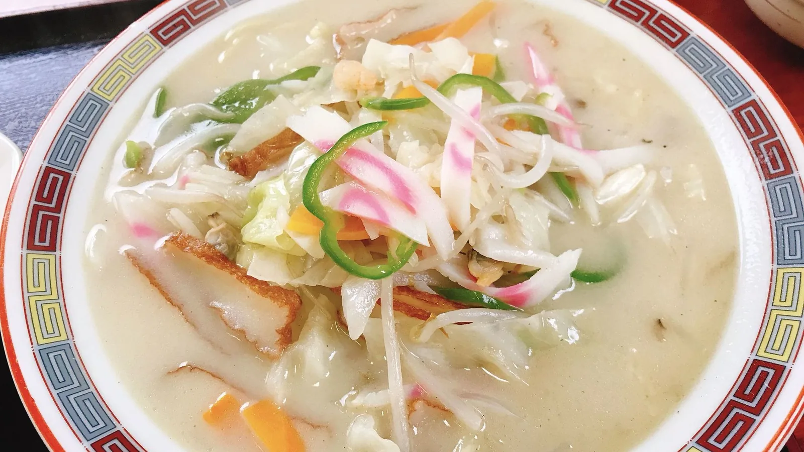
一杯に、これだけ。その日の仕入れで少し変わります
野菜と豚肉、魚介を鍋で炒め、そこへ白湯のスープを注ぎます。麺は同じ鍋で煮上げますので、具から出た味がそのまま麺にうつります。
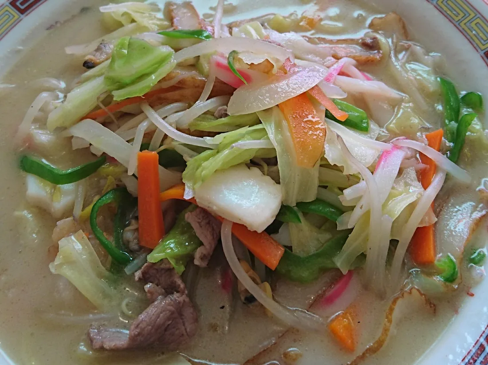
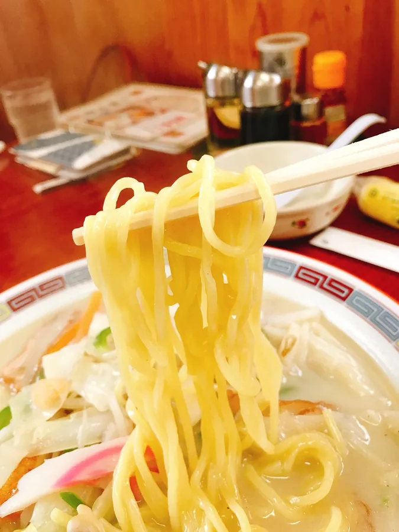
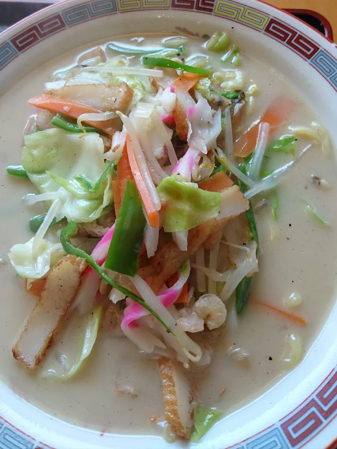
麺は太めのものを使っております。汁を吸っても食べごたえが残ります。
ごはんと小鉢を添えたお膳、チャーハンと合わせたお昼もご用意しております。
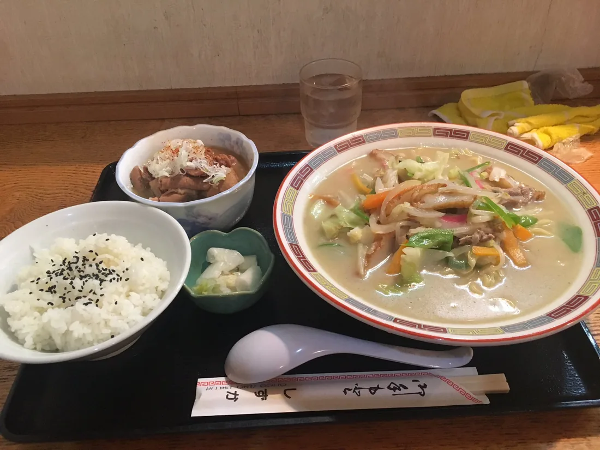
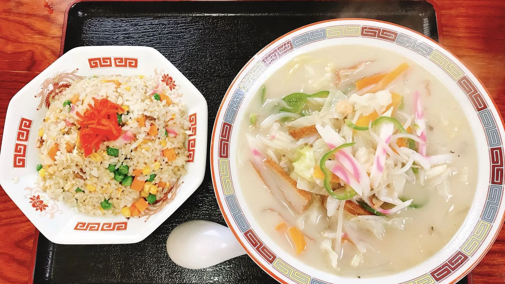
ちゃんぽんと同じ具を、揚げた麺の上からとろみをつけてかけております。同じ材料でも別の顔になりますので、二度目にはこちらもどうぞ。
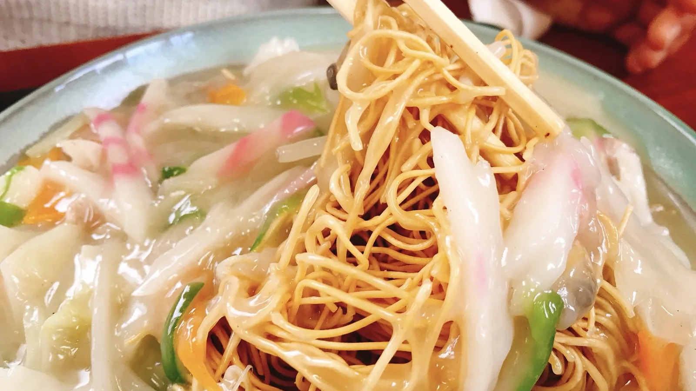
古河で、この二つを看板に掲げております。新4号を走っていて赤い看板が目に入りましたら、どうぞお寄りください。
醤油と味噌のラーメン、チャーハン、餃子、もつ煮もご用意しております。お連れ様と違うものを頼んでいただけます。
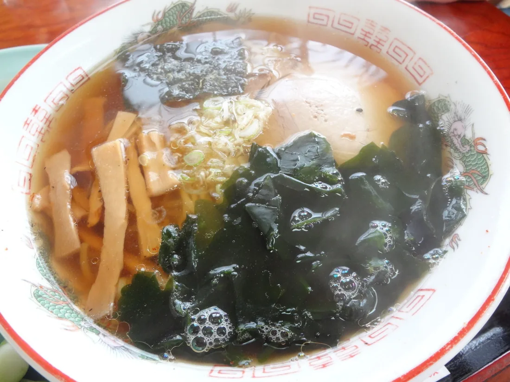
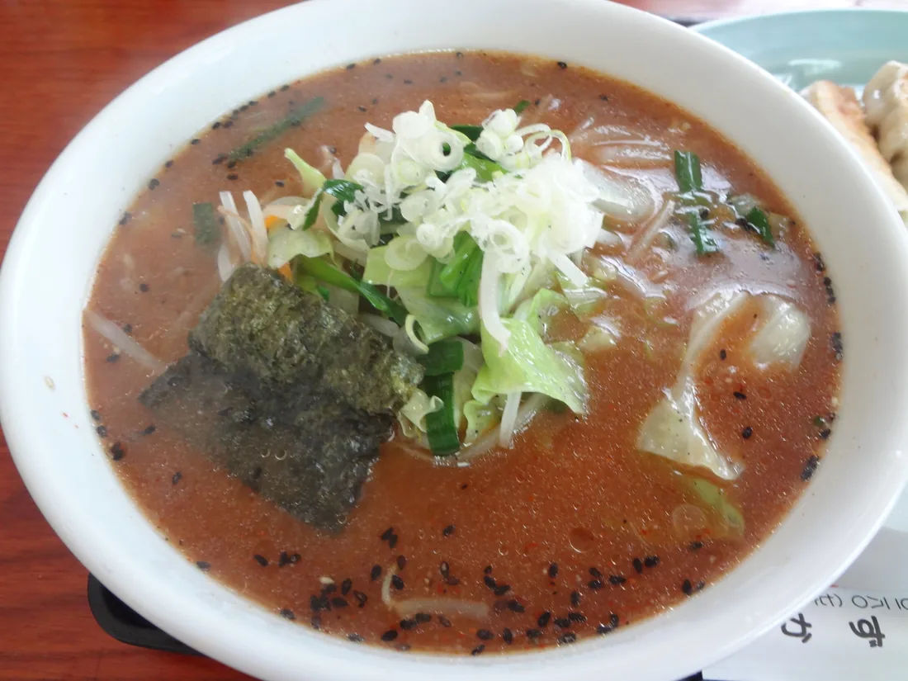
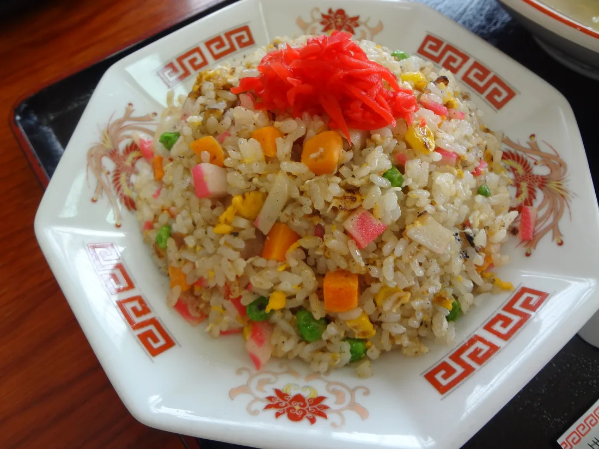
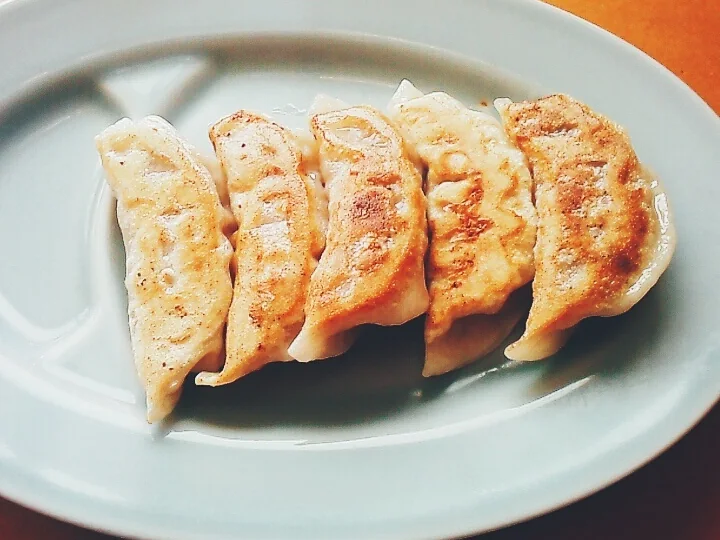
お履き物を脱いでお上がりいただけるお座敷がございます。小さなお子様とご一緒でも、まわりを気にせずお過ごしいただけます。
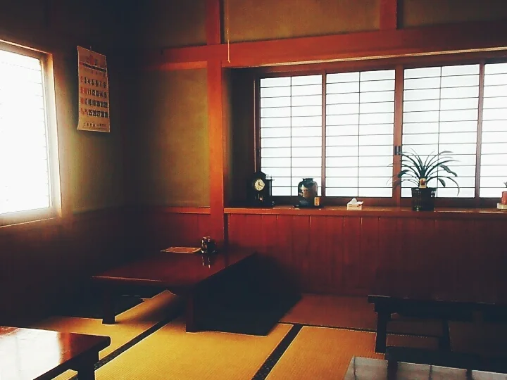
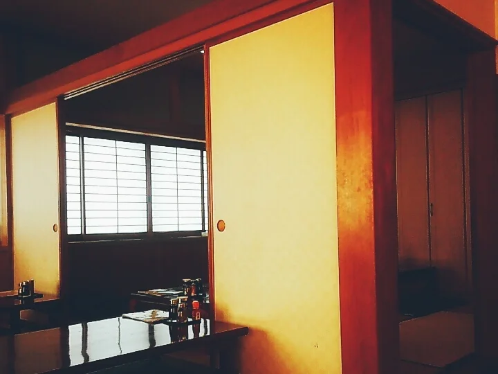
このほか気になることは、お電話でお尋ねください。0280-76-7515
看板に吸い寄せられて、Uターンをしました。
お客様の声より
チェーン店以外で長崎ちゃんぽんを売りにするお店は、なかなか見かけません。
お客様の声より
大将は長崎のご出身だそうです。
お客様の声より
道の駅まくらがの里こがの出入口のすぐ脇で、赤い暖簾を出しております。
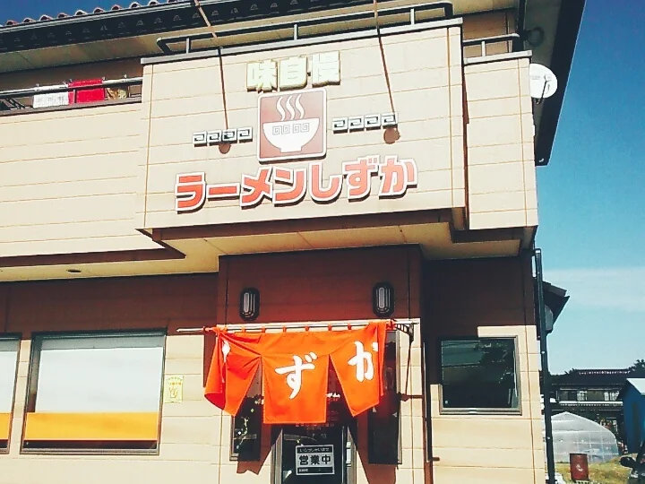
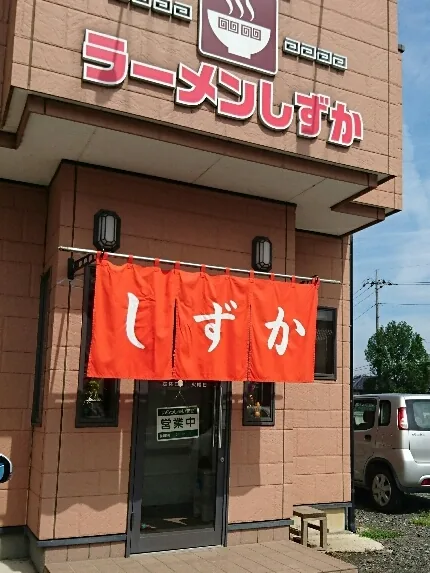
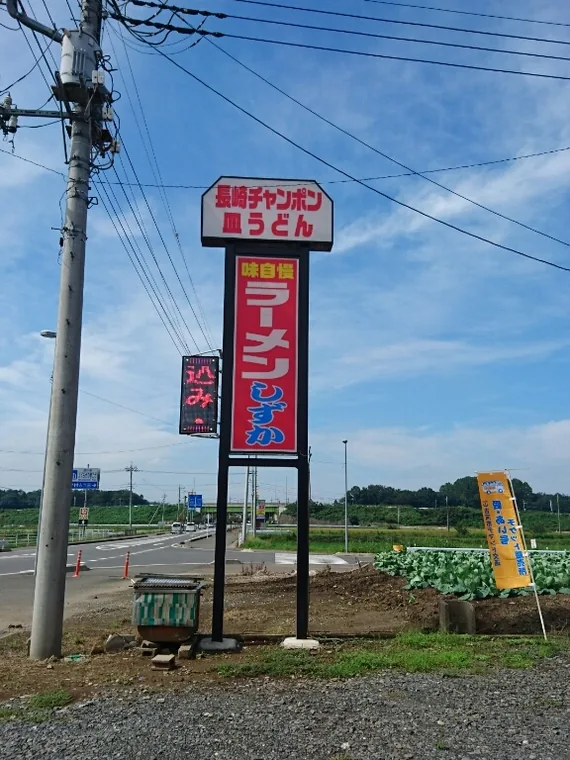
| 住所 | 〒306-0111 茨城県古河市大和田2739-3 |
|---|---|
| 電話 | 0280-76-7515 |
| 営業時間 | 昼 11:30〜14:00／夜 17:00〜21:00 |
| 定休日 | 火曜日 |
| お席 | テーブル席・お座敷（全席禁煙） |
| 駐車場 | ございます |
| お支払い | 現金のみ |
| 目印 | 新4号バイパスの大和田交差点を東へ。道の駅まくらがの里こがの出入口のすぐ脇です。 Googleマップで経路を見る |